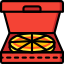
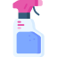
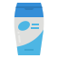
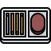

Wine bottle
×Make sure you rinse our your bottles before putting them in with glass recycling. If your council collects all recycling together, make sure the bottle is dry before storing it with paper and cardboard waste.
Cardboard pizza box
× Your pizza box should be free of food waste before putting it into the recycling, otherwise it may contaminate everything else in there!
Spray cleaner
× Check out the label on your spray cleaner to see what type of plastic it is made put of. Inside the recycling symbol on the label, look for the number to see what type of plastic it is. Some places do not recycle any plastics other than types 1, 2 and 5. Also the spray top may not be recyclable. Check out your council\'s website to beforehand.
Shampoo bottle
× Besides making sure you bottle is free of any residual product, make sure to remove the cap or pump. These are often not recyclable and must be put into general waste.
Post it notes
×You may think all paper items are recyclable, but there are many exceptions to the rule. Firstly, the adhesive on the post it note is not recyclable and could contaminate other paper waste. Additionally, post- it notes are often too small to be picked up by scanners and therefore can not be readily recycled. Put these in general waste.
Plastic water bottle
×
Separation is key to remember here. While water bottles themselves are easily recyclable, the caps are too small to be picked up by scanners and must go into general waste.
Meal Deal Container
× When you finish your lunch, make sure no food waste is left. Then separate the clear film from the cardboard packaging. The clear film goes into general waste while the cardboard may be recycled.
Coffee cup
×We wish we could recycle our takeaway coffee cups but sadly, due to food contamination, they must go into general waste. You can sometimes recycle the lids however.
Instructions
×We'll show you some information in the next few pop-ups and then test your knowledge! Drag the items to sort and dispose of them correctly. If you think they need to be washed or have something removed, drag and hover over those boxes, and when you think the item is ready, drag it to one of the bins to dispose of it.